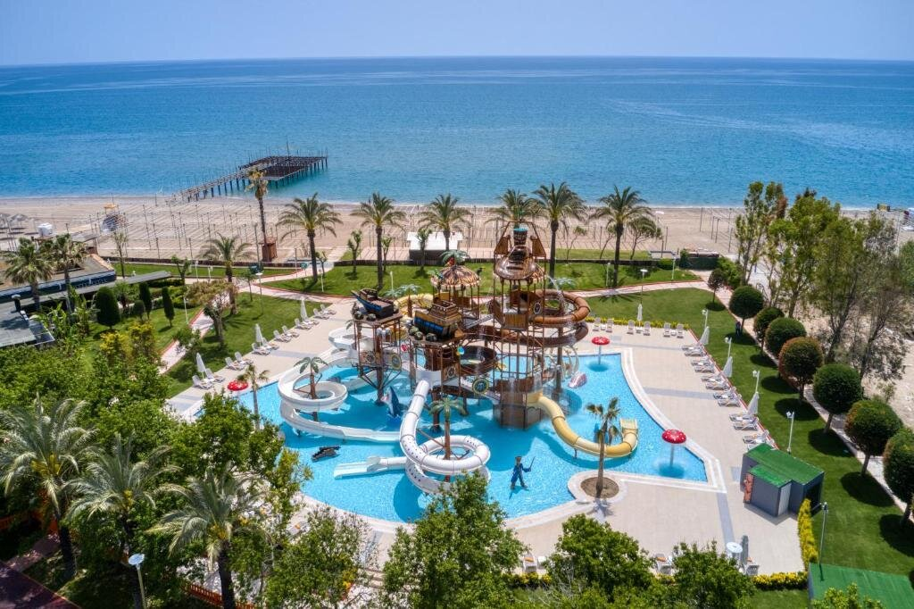

Dobedan Exclusive Hotel & Spa ★★★★★, Белек
Небольшие корпуса дарят весь шик самого элитного курорта Турции. В них расположилось чуть более 700 номеров и каждый – идеален. В основном, это стандарты. Здесь они занимают площадь 27 кв.м. и предлагают все – от чайника до бесплатного вай-фая, мини-бар, кондиционер и сейф – само собой разумеющееся. А вот вариантов повышенного класса более десяти видов. Несколько вариантов семейных номеров с одноярусными и двухъярусными кроватями, номера с отдельными саунами, бильярдными, несколькими спальнями и джакузи, эксклюзивные номера с вип-концепцией.
Не меньшее разнообразие и в кухне. Кроме главного ресторана с классическими блюдами, выполненными на высочайшем уровне, гостей ждут шесть а ля картов, среди которых французский и японский. Все рестораны платные, самый дорогой 35 евро с человека. А премиальные напитки предлагают девять баров, три из которых работают круглосуточно.
Для детей – все условия. Баночное питание, горшки, блендер, аквапарк, несколько бассейнов, детская анимация. Последняя заслуживает особого внимания. Мини-клуб работает весь день, в нем в режиме нон-стоп проходят различные активности. А вечером всех ждут на мини-диско.
У взрослых своя спортивно-развлекательная программа. Девять бассейнов (есть открытые и закрытые с подогревом), спа, теннисный корт, спортивные игры, тренажерный зал, аквааэробика актуальны днем, а вечер – время развлечений. Эффектные шоу, зажигательные дискотеки, конкурсы, розыгрыши и много драйва!
"У нас был номер в корпусе Делюкс, поэтому все впечатления по нему. Питались в этом же корпусе. Питание там хорошее, выбор большой, хотя дети все равно ели одни макароны. Но есть и гречка, и овощи, и рис. Фруктов всегда много, вплоть до маракуйи и голубики. Что касается самого номера – большой, убирают хорошо, есть и душ, и ванна. А какая там большая терраса с видом на море! Не рекомендую номера на первом этаже основного здания – там крошечный балкон. Анимация – зачет. Каждую неделю концерты знаменитостей, российские артисты там потоком) В остальные вечера проводят шоу – уровень нормальный, не самодеятельность." – Андрей К.